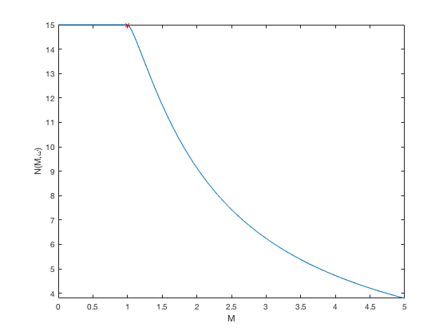
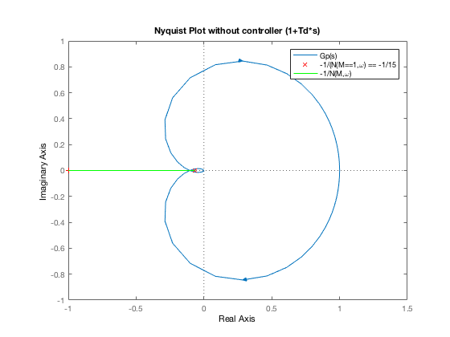

Assignment 4, q1, part 2 -- BEFORE Controller
Alexander Hiller (11850637)
Contents
Setup
clear all close all clc % Variable used in N(M,w) syms M
Constants from the clipped non-linear graph
K = 15; % Slope S = 1; % s = tf([1 0],[1]); Gp_tf = 0.233/((s^2 + 0.676*s + 0.233)*(1+0.4*s)); [Gp_tf_num, Gp_tf_den] = tfdata(Gp_tf, 'v'); clear s syms s Gp_sym = poly2sym(Gp_tf_num,s)/poly2sym(Gp_tf_den,s); % As defined in pg 163/175 of Analogue and Digital Control (Nguyen) N = piecewise(M<S, K, M>=S, K*N_0(M/S)); assume(M>0) M = 1;
N(M,w) at M = 1 == N_1
N_1 = K*N_0(1/S);
point == -1/(N_1)
point = -1/N_1;
Show the limiting of Clipped function
figure(1) fplot(N) hold on plot(1, N_1, 'rx'); hold off ylabel('N(M,\omega)') xlabel('M')
Prepare the -1/N(M, w) function to plot on Nyquist plot
clear M; M = linspace(1, 100); nonLinStability = -1./(subs(N,M)); % Creating zeros because for the imag part of nonLinStability
Nyquist Plot without controller (1+Td*s)
figure(2) nyquist(Gp_tf) hold on plot(point, 0, 'rx') plot(nonLinStability, zeros(size(nonLinStability)), 'g') hold off % axis([-10 10 -10 10]) title('Nyquist Plot without controller (1+Td*s)') legend('Gp(s)','-1/(N(M==1,\omega) == -1/15', '-1/N(M,\omega)')
Pre-Controller conclusion:
We can see that the plant (Gp) will intersect our function, causing instability.
save('preController.mat')